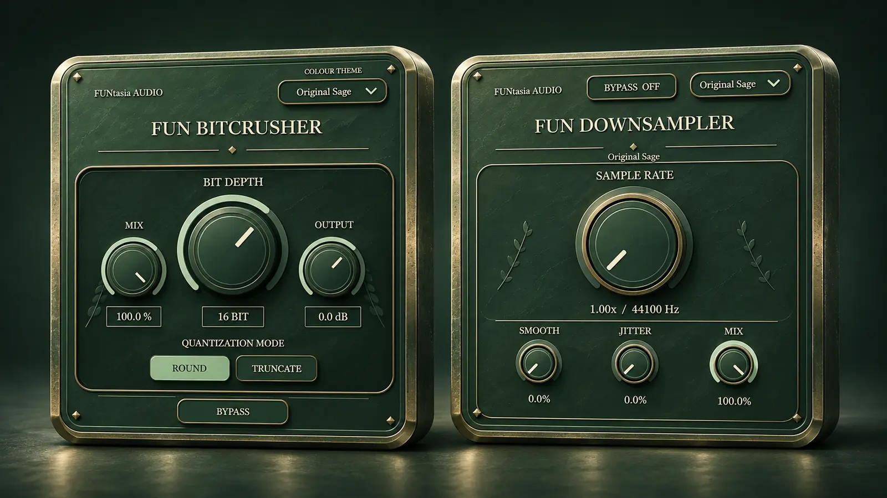
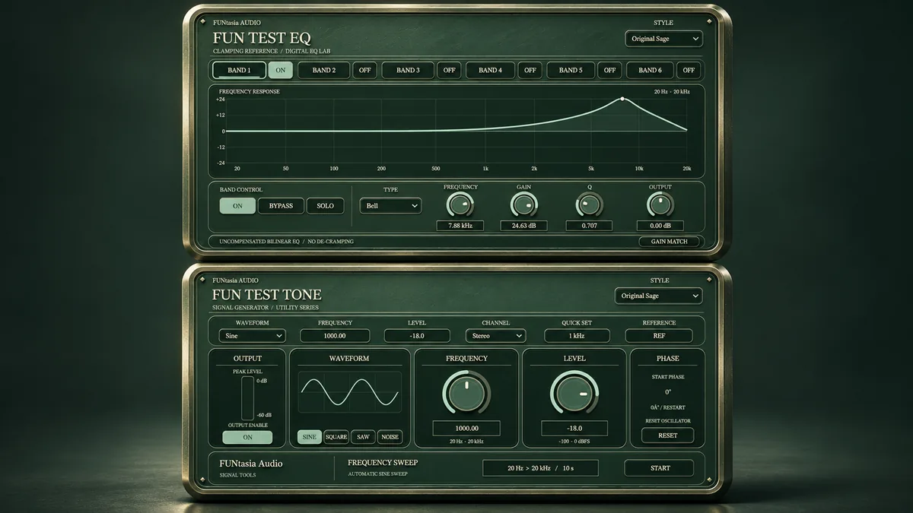
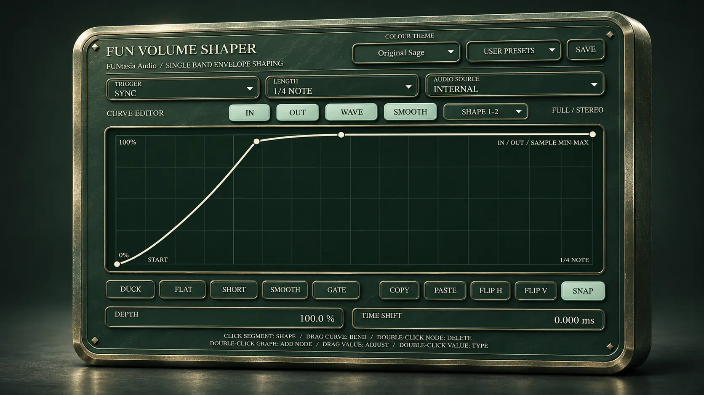
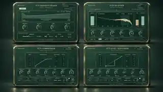
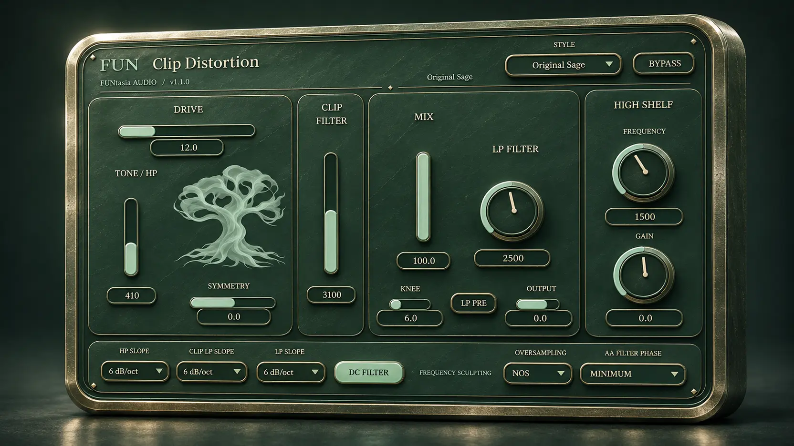
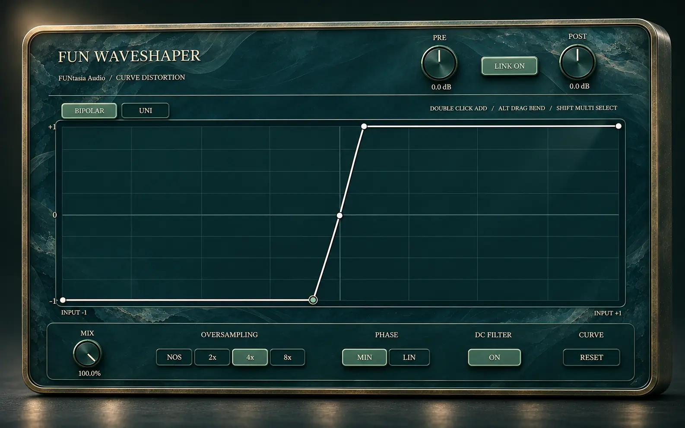
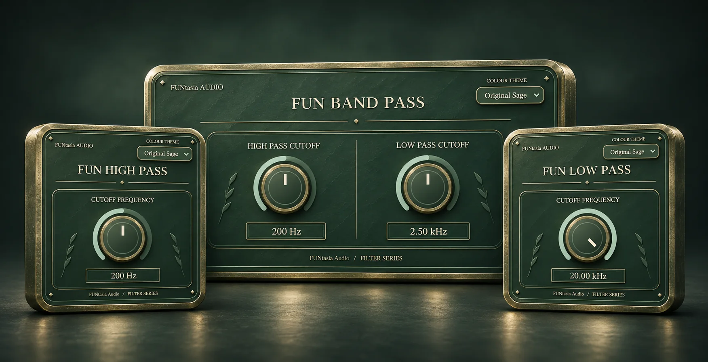

FUNtasia Free Collection v1.0.6
Nouveauté v1.0.6 : FUN Tuner et FUN De-Esser.
Les images des produits sont des visuels conceptuels et peuvent différer des interfaces réelles des plugins.
Assurance qualité : Chaque mise à jour est testée avec pluginval (Strictness Level 10), le validateur VST3 de Steinberg et des tests fonctionnels et de non-régression détaillés, y compris Annuler/Rétablir.
Nouveauté v1.0.6 : FUN Tuner et FUN De-Esser.


















Aucun produit trouvé
Non. Nous utilisons l’IA pour nous aider à développer, mais nous ne lui confions pas la création et la publication entièrement automatiques des plugins. Nous dirigeons la conception, vérifions l’implémentation, testons et corrigeons les problèmes. Notre démarche est expliquée plus en détail dans notre article sur Note.
Certains sont des plugins intégrés conçus pour FUNtasia Studio, notre DAW orienté apprentissage. Nous les distribuons aussi séparément pour qu’ils puissent être utilisés sans ce DAW.
Oui. Nous accordons la même importance à la qualité des plugins gratuits et payants. Retrouvez nos pratiques autour de pluginval Strictness Level 10, Steinberg VST3 Validator et des tests de non-régression sur la page Assurance qualité.
Rejoignez notre Discord officiel, FUNtasia Alchemist Guild. Pour un bug, précisez la version du produit, le DAW et les étapes pour le reproduire. Rejoindre la communauté ↗
Nous souhaitons prendre en charge Mac, mais voulons d’abord étudier attentivement l’étendue du support que nous pourrons assurer avant de passer à la mise en œuvre.